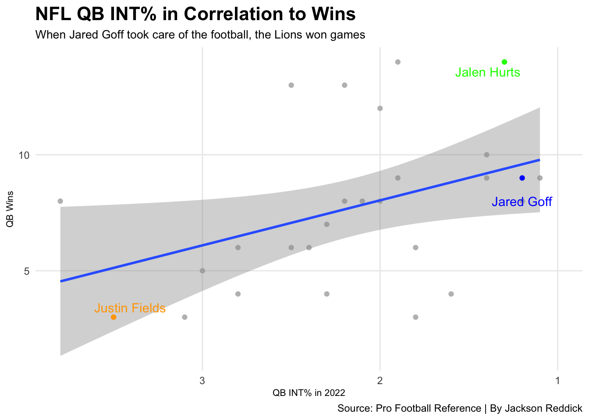

This past NFL season, the Detroit Lions were America’s team that everyone loved to watch, well I guess probably I only fall under that category. Nonetheless, the Lions started last season awful, starting at 1-6, as in week three I watched them implode in front of my eyes in Minneapolis, while my fiance was more pissed off than I was because I gave her something to believe in. But the Lions finished the season at 9-8, as the Seattle Seahawks took the final playoff spot to be drilled by the 49ers.
But who was the driving force behind the Detroit Lions? Jared Thomas Goff, a man who was left out to dry by his former head coach Sean McVay, and the Lions were now tasked with re-working Jared Goff’s career. But a main question with Goff is does he get aided by scheme, or is he that great of a player? That is what we shall figure out here today.
fit <-lm(Wins ~ INTpercentage, data = percentages)summary(fit)
Call:
lm(formula = Wins ~ INTpercentage, data = percentages)
Residuals:
Min 1Q Median 3Q Max
-5.4237 -1.8561 -0.4827 0.7852 5.9350
Coefficients:
Estimate Std. Error t value Pr(>|t|)
(Intercept) 11.918 1.973 6.041 2.6e-06 ***
INTpercentage -1.941 0.873 -2.223 0.0355 *
---
Signif. codes: 0 '***' 0.001 '**' 0.01 '*' 0.05 '.' 0.1 ' ' 1
Residual standard error: 3.129 on 25 degrees of freedom
Multiple R-squared: 0.1651, Adjusted R-squared: 0.1317
F-statistic: 4.944 on 1 and 25 DF, p-value: 0.03546
Code
goff <- percentages |>filter(Player =="Jared Goff*")hurts <- percentages |>filter(Player =="Jalen Hurts*")fields <- percentages |>filter(Player =="Justin Fields")ggplot() +geom_point(data=percentages, aes(x=INTpercentage, y=Wins), color="grey") +scale_x_reverse() +geom_smooth(data=percentages, aes(x=INTpercentage, y=Wins), method="lm") +geom_point(data=goff, aes(x=INTpercentage, y=Wins), color="blue") +geom_text_repel(data=goff, aes(x=1.0, y=8, label="Jared Goff"), color="blue") +geom_point(data=hurts, aes(x=INTpercentage, y=Wins), color="green") +geom_text_repel(data=hurts, aes(x=INTpercentage, y=Wins, label="Jalen Hurts"), color="green") +geom_point(data=fields, aes(x=INTpercentage, y=Wins), color="orange") +geom_text_repel(data=fields, aes(x=INTpercentage, y=Wins, label="Justin Fields"), color="orange") +labs(x="QB INT% in 2022", y="QB Wins", title="NFL QB INT% in Correlation to Wins", subtitle="When Jared Goff took care of the football, the Lions won games", caption="Source: Pro Football Reference | By Jackson Reddick") +theme_minimal() +theme(plot.title =element_text(size =16, face ="bold"),axis.title =element_text(size =8), plot.subtitle =element_text(size=10), panel.grid.minor =element_blank() )

When Jared Goff took care of the football, good things happened. Maybe Nebraska should take a play out that playbook… sorry to throw a stray Nebraska. But Goff and the Lions were a different team when he protected the ball, as Goff didn’t throw and INT from Week 9 to the end of the season.
A big part of quarterback play in the NFL is due to how the offensive coordinators scheme up WRs and TEs for yards after the catch. Some plays they happen by breaking tackles, but most times OCs will draw up plays for YAC to happen naturally.
goff1 <- logs |>filter(Tm =="DET")cousins <- logs |>filter(Tm =="MIN")mahomes <- logs |>filter(Tm =="KAN")herbert <- logs |>filter(Tm =="LAC")rodgers <- logs |>filter(Tm =="GNB")burrow <- logs |>filter(Tm =="CIN")ggplot() +geom_point(data=logs, aes(x=Yds, y=YAC, group=Tm), color="grey") +geom_hline(yintercept=122.20, color="blue") +geom_point(data=goff1, aes(x=Yds, y=YAC), color="#0076B6") +geom_point(data=cousins, aes(x=Yds, y=YAC), color="#4F2683") +geom_point(data=mahomes, aes(x=Yds, y=YAC), color="#FFB81C") +geom_point(data=herbert, aes(x=Yds, y=YAC), color="#FFC20E") +geom_point(data=rodgers, aes(x=Yds, y=YAC), color="#203731") +geom_point(data=burrow, aes(x=Yds, y=YAC), color="#FB4F14") +scale_y_continuous(limits =c(0, 300)) +facet_wrap(~Tm) +labs(x="QB Passing Yards in a Game", y="Yards After Catch for each game", title="How inflated QB Passing Yards are due to YAC", subtitle="Jared Goff is in the middle of being aided by scheme, but also being a good QB", caption="Source: Pro Football Reference | By Jackson Reddick") +theme_minimal() +theme(plot.title =element_text(size =16, face ="bold"),axis.title =element_text(size =8), plot.subtitle =element_text(size=10), panel.grid.minor =element_blank() )
Goff is pretty much in the middle ground, as Amon-Ra St. Brown is the main reason that the YAC is up so high. The average YAC per game was 122.20 yards in a game, and Goff was pretty steady in that number, as he played within the scheme the Lions wanted to run. As with Mahomes, a ton of that is just Travis Kelce refusing to be tackled most times.
But to really think about Goff’s 2022 season is looking at his touchdowns. Goff was in the top ten of NFL QBs in touchdown passes, but is there more to the story?
Code
library(tidyverse)library(gt)logs <-read_csv("2022nflqbs.csv")touchdowns <- logs |>group_by(Player) |>summarise(touchdowns=sum(TD) ) |>top_n(10, wt=touchdowns) |>arrange(desc(touchdowns))touchdowns |>gt() |>cols_label(touchdowns ="Passing Touchdowns" ) |>tab_header(title ="2022 Top Ten NFL QB TD Passes",subtitle ="So Jared Goff is with pretty damn good company" ) |>tab_style(style =cell_text(color ="black", weight ="bold", align ="left"),locations =cells_title("title") ) |>tab_style(style =cell_text(color ="black", align ="left"),locations =cells_title("subtitle") ) |>tab_source_note(source_note =md("**By:** Jackson Reddick | **Source:** Pro Football Reference") ) |>tab_style(locations =cells_column_labels(columns =everything()),style =list(cell_borders(sides ="bottom", weight =px(3)),cell_text(weight ="bold", size=12) ) ) |>opt_row_striping() |>opt_table_lines("none") |>tab_style(style =list(cell_fill(color ="#0076B6"),cell_text(color ="white") ),locations =cells_body(rows = Player =="Jared Goff*") )
2022 Top Ten NFL QB TD Passes
So Jared Goff is with pretty damn good company
Player
Passing Touchdowns
Patrick Mahomes*+
41
Joe Burrow*
35
Josh Allen*
35
Geno Smith*
30
Jared Goff*
29
Kirk Cousins*
29
Aaron Rodgers
26
Justin Herbert
25
Tom Brady
25
Trevor Lawrence*
25
Tua Tagovailoa
25
By: Jackson Reddick | Source: Pro Football Reference
So looking at this you’d think, eh Goff played a good year, but 29 touchdowns on a top ten NFL offense, where did all the other touchdowns go?
Code
library(tidyverse)library(gt)logs2 <-read_csv("nfl2022rbs.csv")touchdowns2 <- logs2 |>group_by(Player) |>summarise(touchdowns=sum(TD) ) |>top_n(10, wt=touchdowns) |>arrange(desc(touchdowns))touchdowns2 |>gt() |>cols_label(touchdowns ="Rushing Touchdowns" ) |>tab_header(title ="2022 Top Ten NFL RB Rushing TDs",subtitle ="So Jared Goff could have thrown a lot more touchdowns..." ) |>tab_style(style =cell_text(color ="black", weight ="bold", align ="left"),locations =cells_title("title") ) |>tab_style(style =cell_text(color ="black", align ="left"),locations =cells_title("subtitle") ) |>tab_source_note(source_note =md("**By:** Jackson Reddick | **Source:** Pro Football Reference") ) |>tab_style(locations =cells_column_labels(columns =everything()),style =list(cell_borders(sides ="bottom", weight =px(3)),cell_text(weight ="bold", size=12) ) ) |>opt_row_striping() |>opt_table_lines("none") |>tab_style(style =list(cell_fill(color ="#0076B6"),cell_text(color ="white") ),locations =cells_body(rows = Player =="Jamaal Williams") )
2022 Top Ten NFL RB Rushing TDs
So Jared Goff could have thrown a lot more touchdowns...
Player
Rushing Touchdowns
Jamaal Williams
17
Austin Ekeler
13
Derrick Henry*
13
Ezekiel Elliott
12
Josh Jacobs*+
12
Nick Chubb*
12
Miles Sanders*
11
Saquon Barkley*
10
Kenneth Walker III
9
Tony Pollard*
9
By: Jackson Reddick | Source: Pro Football Reference
So Jared Goff played a hell of a 2022 season, and franly could have had a ton of more TDs through the air. Overall, yes I do believe that Goff is aided by scheme, but he is one hell of a football player.